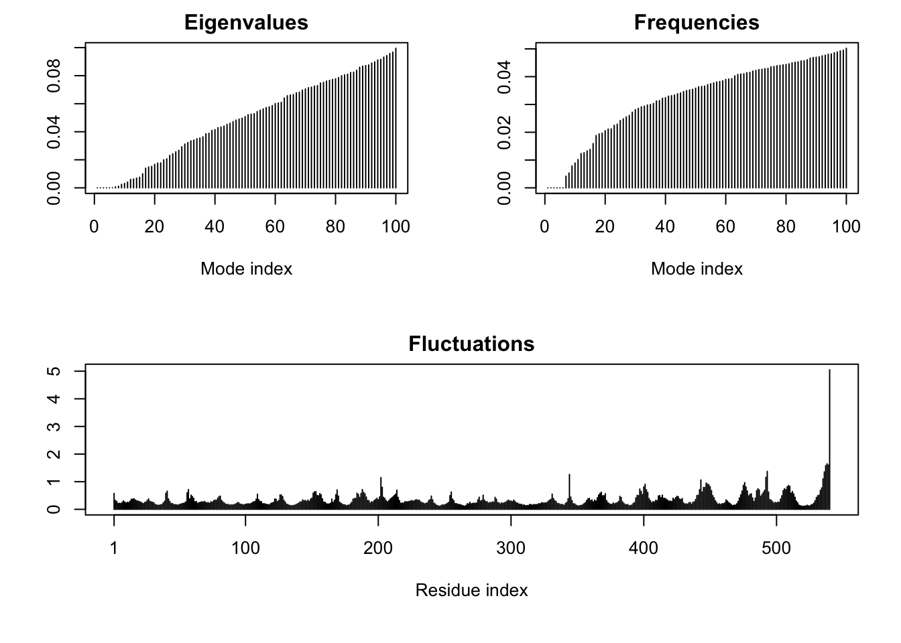

pdbdb <- read.csv("Data Export Summary.csv")Class 11: Structural Bioinformatics
The main database for strucutal data on proteins is PDB(protein data book), let see what it contain:
Data from: https://www.rcsb.org/stats
pdbdb$totalNULL#issue because numbers are in quotes due to the coma
as.numeric(sub(",","",pdbdb$Total)) #convert values to numeric to do math[1] 195610 12318 13720 4531 213 22Could turn the code above into a function
comma2numeric <- function(x){
as.numeric(sub(",","",x))
}
comma2numeric((pdbdb$X.ray)) #test function[1] 167192 9639 8730 2869 170 11apply(pdbdb,2,comma2numeric)Warning in FUN(newX[, i], ...): NAs introduced by coercion Molecular.Type X.ray EM NMR Multiple.methods Neutron Other Total
[1,] NA 167192 15572 12529 208 77 32 195610
[2,] NA 9639 2635 34 8 2 0 12318
[3,] NA 8730 4697 286 7 0 0 13720
[4,] NA 2869 137 1507 14 3 1 4531
[5,] NA 170 10 33 0 0 0 213
[6,] NA 11 0 6 1 0 4 22OR TRY DIFFERENT FUNCTION
library(readr)
pdbdb <- read_csv("Data Export Summary.csv")Rows: 6 Columns: 8
── Column specification ────────────────────────────────────────────────────────
Delimiter: ","
chr (1): Molecular Type
dbl (3): Multiple methods, Neutron, Other
num (4): X-ray, EM, NMR, Total
ℹ Use `spec()` to retrieve the full column specification for this data.
ℹ Specify the column types or set `show_col_types = FALSE` to quiet this message.Q1: What percentage of structures in the PDB are solved by X-Ray and Electron Microscopy
#Sum of all x-rays divided the Total
(sum(pdbdb$"X-ray")/sum(pdbdb$Total)) * 100[1] 83.30359Q2: What proportion of structures in the PDB are protein?
#First value of column 'Total' is only protein, divided by all the values in 'Total'
(pdbdb$Total[1]/ sum(pdbdb$Total)) * 100[1] 86.39483Q3: Type HIV in the PDB website search box on the home page and determine how many HIV-1 protease structures are in the current PDB?
#Look up HIV on website, number of results = 4,553Q4: Water molecules normally have 3 atoms. Why do we see just one atom per water molecule in this structure?
# because the diagram focuses on the central oxygen atomQ6: Generate and save a figure clearly showing the two distinct chains of HIV-protease along with the ligand. You might also consider showing the catalytic residues ASP 25 in each chain and the critical water (we recommend “Ball & Stick” for these side-chains). Add this figure to your Quarto document.
Q7: [Optional] As you have hopefully observed HIV protease is a homodimer (i.e. it is composed of two identical chains). With the aid of the graphic display can you identify secondary structure elements that are likely to only form in the dimer rather than the monomer?
Import image from molstar (https://molstar.org/viewer/): 
Steps to edit this protein structure:
click arrow on right side - select D25 (aspartate) - 3D box - set representation to ‘spacefill’ - do the same for chain B to visualize it in a more realistic way, and see where the ligand binds: on right hand side click components - add - selection = ‘polymer’ - representation = ‘molecular surface’ - add component 
Bio3D
The Bio3D pachage allows us to do all sorts of structural bioinformatics work in R.
Let’s start with how it can read PDB files:
library(bio3d)
pdb <- read.pdb("1hsg") Note: Accessing on-line PDB filepdb
Call: read.pdb(file = "1hsg")
Total Models#: 1
Total Atoms#: 1686, XYZs#: 5058 Chains#: 2 (values: A B)
Protein Atoms#: 1514 (residues/Calpha atoms#: 198)
Nucleic acid Atoms#: 0 (residues/phosphate atoms#: 0)
Non-protein/nucleic Atoms#: 172 (residues: 128)
Non-protein/nucleic resid values: [ HOH (127), MK1 (1) ]
Protein sequence:
PQITLWQRPLVTIKIGGQLKEALLDTGADDTVLEEMSLPGRWKPKMIGGIGGFIKVRQYD
QILIEICGHKAIGTVLVGPTPVNIIGRNLLTQIGCTLNFPQITLWQRPLVTIKIGGQLKE
ALLDTGADDTVLEEMSLPGRWKPKMIGGIGGFIKVRQYDQILIEICGHKAIGTVLVGPTP
VNIIGRNLLTQIGCTLNF
+ attr: atom, xyz, seqres, helix, sheet,
calpha, remark, callattributes(pdb)$names
[1] "atom" "xyz" "seqres" "helix" "sheet" "calpha" "remark" "call"
$class
[1] "pdb" "sse"head(pdb$atom) type eleno elety alt resid chain resno insert x y z o b
1 ATOM 1 N <NA> PRO A 1 <NA> 29.361 39.686 5.862 1 38.10
2 ATOM 2 CA <NA> PRO A 1 <NA> 30.307 38.663 5.319 1 40.62
3 ATOM 3 C <NA> PRO A 1 <NA> 29.760 38.071 4.022 1 42.64
4 ATOM 4 O <NA> PRO A 1 <NA> 28.600 38.302 3.676 1 43.40
5 ATOM 5 CB <NA> PRO A 1 <NA> 30.508 37.541 6.342 1 37.87
6 ATOM 6 CG <NA> PRO A 1 <NA> 29.296 37.591 7.162 1 38.40
segid elesy charge
1 <NA> N <NA>
2 <NA> C <NA>
3 <NA> C <NA>
4 <NA> O <NA>
5 <NA> C <NA>
6 <NA> C <NA>pdbseq(pdb) 1 2 3 4 5 6 7 8 9 10 11 12 13 14 15 16 17 18 19 20
"P" "Q" "I" "T" "L" "W" "Q" "R" "P" "L" "V" "T" "I" "K" "I" "G" "G" "Q" "L" "K"
21 22 23 24 25 26 27 28 29 30 31 32 33 34 35 36 37 38 39 40
"E" "A" "L" "L" "D" "T" "G" "A" "D" "D" "T" "V" "L" "E" "E" "M" "S" "L" "P" "G"
41 42 43 44 45 46 47 48 49 50 51 52 53 54 55 56 57 58 59 60
"R" "W" "K" "P" "K" "M" "I" "G" "G" "I" "G" "G" "F" "I" "K" "V" "R" "Q" "Y" "D"
61 62 63 64 65 66 67 68 69 70 71 72 73 74 75 76 77 78 79 80
"Q" "I" "L" "I" "E" "I" "C" "G" "H" "K" "A" "I" "G" "T" "V" "L" "V" "G" "P" "T"
81 82 83 84 85 86 87 88 89 90 91 92 93 94 95 96 97 98 99 1
"P" "V" "N" "I" "I" "G" "R" "N" "L" "L" "T" "Q" "I" "G" "C" "T" "L" "N" "F" "P"
2 3 4 5 6 7 8 9 10 11 12 13 14 15 16 17 18 19 20 21
"Q" "I" "T" "L" "W" "Q" "R" "P" "L" "V" "T" "I" "K" "I" "G" "G" "Q" "L" "K" "E"
22 23 24 25 26 27 28 29 30 31 32 33 34 35 36 37 38 39 40 41
"A" "L" "L" "D" "T" "G" "A" "D" "D" "T" "V" "L" "E" "E" "M" "S" "L" "P" "G" "R"
42 43 44 45 46 47 48 49 50 51 52 53 54 55 56 57 58 59 60 61
"W" "K" "P" "K" "M" "I" "G" "G" "I" "G" "G" "F" "I" "K" "V" "R" "Q" "Y" "D" "Q"
62 63 64 65 66 67 68 69 70 71 72 73 74 75 76 77 78 79 80 81
"I" "L" "I" "E" "I" "C" "G" "H" "K" "A" "I" "G" "T" "V" "L" "V" "G" "P" "T" "P"
82 83 84 85 86 87 88 89 90 91 92 93 94 95 96 97 98 99
"V" "N" "I" "I" "G" "R" "N" "L" "L" "T" "Q" "I" "G" "C" "T" "L" "N" "F" pdbseq(pdb)[25] #number gives you amino acid at that position 25
"D" Q7: How many amino acid residues are there in this pdb object?
sum(pdb$calpha) #there is 1 calpha per AA so count calpha's[1] 198length(pdb)[1] 8Q8: Name one of the two non-protein residues?
#HOH, MK1Q9: How many protein chains are in this structure?
# 2 chainsadk <- read.pdb("3s36") Note: Accessing on-line PDB fileadk
Call: read.pdb(file = "3s36")
Total Models#: 1
Total Atoms#: 4104, XYZs#: 12312 Chains#: 3 (values: L H X)
Protein Atoms#: 4104 (residues/Calpha atoms#: 540)
Nucleic acid Atoms#: 0 (residues/phosphate atoms#: 0)
Non-protein/nucleic Atoms#: 0 (residues: 0)
Non-protein/nucleic resid values: [ none ]
Protein sequence:
DIQMTQSPSSVSASIGDRVTITCRASQGIDNWLGWYQQKPGKAPKLLIYDASNLDTGVPS
RFSGSGSGTYFTLTISSLQAEDFAVYFCQQAKAFPPTFGGGTKVDIKRTVAAPSVFIFPP
SDEQLKSGTASVVCLLNNFYPREAKVQWKVDNALQSGNSQESVTEQDSKDSTYSLSSTLT
LSKADYEKHKVYACEVTHQGLSSPVTKSFNRGECVQLVQSGGGLV...<cut>...KPFV
+ attr: atom, xyz, seqres, helix, sheet,
calpha, remark, call# Perform fleibility prediction
m <- nma(adk)Warning in nma.pdb(adk): Possible multi-chain structure or missing in-structure residue(s) present
Fluctuations at neighboring positions may be affected. Building Hessian... Done in 0.059 seconds.
Diagonalizing Hessian... Done in 3.588 seconds.plot(m)
Write out multi-model PDB file (trajectory) that we can use to make an animation or the predicted motions
mktrj(m, file="adk.pdb")I can open this in Mol* to play the trajectory…
Comparative analysis of Protein Structure
library(bio3d)Here we will find and analyze all ADK structures in the PDB database
We will start with a single database accession id: “1ake_A”
id <- "1ake_A"
aa <- get.seq(id)Warning in get.seq(id): Removing existing file: seqs.fastaFetching... Please wait. Done.Question 10
Q10. Which of the packages above is found only on BioConductor and not CRAN?
# BioConductor is a different set of packges only for biology tools, the 'msa' package is from BioConductorI ran these cmds int the R console:
install.packages(“BiocManager”) BiocManager::install(“msa”)
Question 13
Q13. How many amino acids are in this sequence, i.e. how long is this sequence?
length(aa$ali)[1] 214aa$callread.fasta(file = outfile)#b <- blast.pdb(aa)
# fun fact: government website on election day so might block user#head(b)
#attributes(b)Plot of results from blast search
# hits <- plot(b)
# y axis is the log of E values because it is difficult to work with extremely small values, often take the log in scenarios like these# hits
# hits$pdb.id
# b$hit.tablehits <- NULL
hits$pdb.id <- c('1AKE_A','6S36_A','6RZE_A','3HPR_A','1E4V_A','5EJE_A','1E4Y_A','3X2S_A','6HAP_A','6HAM_A','4K46_A','3GMT_A','4PZL_A')# Download related PDB files
files <- get.pdb(hits$pdb.id, path="pdbs", split=TRUE, gzip=TRUE)Warning in get.pdb(hits$pdb.id, path = "pdbs", split = TRUE, gzip = TRUE):
pdbs/1AKE.pdb.gz exists. Skipping downloadWarning in get.pdb(hits$pdb.id, path = "pdbs", split = TRUE, gzip = TRUE):
pdbs/6S36.pdb.gz exists. Skipping downloadWarning in get.pdb(hits$pdb.id, path = "pdbs", split = TRUE, gzip = TRUE):
pdbs/6RZE.pdb.gz exists. Skipping downloadWarning in get.pdb(hits$pdb.id, path = "pdbs", split = TRUE, gzip = TRUE):
pdbs/3HPR.pdb.gz exists. Skipping downloadWarning in get.pdb(hits$pdb.id, path = "pdbs", split = TRUE, gzip = TRUE):
pdbs/1E4V.pdb.gz exists. Skipping downloadWarning in get.pdb(hits$pdb.id, path = "pdbs", split = TRUE, gzip = TRUE):
pdbs/5EJE.pdb.gz exists. Skipping downloadWarning in get.pdb(hits$pdb.id, path = "pdbs", split = TRUE, gzip = TRUE):
pdbs/1E4Y.pdb.gz exists. Skipping downloadWarning in get.pdb(hits$pdb.id, path = "pdbs", split = TRUE, gzip = TRUE):
pdbs/3X2S.pdb.gz exists. Skipping downloadWarning in get.pdb(hits$pdb.id, path = "pdbs", split = TRUE, gzip = TRUE):
pdbs/6HAP.pdb.gz exists. Skipping downloadWarning in get.pdb(hits$pdb.id, path = "pdbs", split = TRUE, gzip = TRUE):
pdbs/6HAM.pdb.gz exists. Skipping downloadWarning in get.pdb(hits$pdb.id, path = "pdbs", split = TRUE, gzip = TRUE):
pdbs/4K46.pdb.gz exists. Skipping downloadWarning in get.pdb(hits$pdb.id, path = "pdbs", split = TRUE, gzip = TRUE):
pdbs/3GMT.pdb.gz exists. Skipping downloadWarning in get.pdb(hits$pdb.id, path = "pdbs", split = TRUE, gzip = TRUE):
pdbs/4PZL.pdb.gz exists. Skipping download
|
| | 0%
|
|===== | 8%
|
|=========== | 15%
|
|================ | 23%
|
|====================== | 31%
|
|=========================== | 38%
|
|================================ | 46%
|
|====================================== | 54%
|
|=========================================== | 62%
|
|================================================ | 69%
|
|====================================================== | 77%
|
|=========================================================== | 85%
|
|================================================================= | 92%
|
|======================================================================| 100%Next we will use the pdbin() function to alism and also optionally fit (superimpose) the identified PDB structures
# Align related PDBs
pdbs <- pdbaln(files, fit = TRUE, exefile="msa")Reading PDB files:
pdbs/split_chain/1AKE_A.pdb
pdbs/split_chain/6S36_A.pdb
pdbs/split_chain/6RZE_A.pdb
pdbs/split_chain/3HPR_A.pdb
pdbs/split_chain/1E4V_A.pdb
pdbs/split_chain/5EJE_A.pdb
pdbs/split_chain/1E4Y_A.pdb
pdbs/split_chain/3X2S_A.pdb
pdbs/split_chain/6HAP_A.pdb
pdbs/split_chain/6HAM_A.pdb
pdbs/split_chain/4K46_A.pdb
pdbs/split_chain/3GMT_A.pdb
pdbs/split_chain/4PZL_A.pdb
PDB has ALT records, taking A only, rm.alt=TRUE
. PDB has ALT records, taking A only, rm.alt=TRUE
. PDB has ALT records, taking A only, rm.alt=TRUE
. PDB has ALT records, taking A only, rm.alt=TRUE
.. PDB has ALT records, taking A only, rm.alt=TRUE
.... PDB has ALT records, taking A only, rm.alt=TRUE
. PDB has ALT records, taking A only, rm.alt=TRUE
...
Extracting sequences
pdb/seq: 1 name: pdbs/split_chain/1AKE_A.pdb
PDB has ALT records, taking A only, rm.alt=TRUE
pdb/seq: 2 name: pdbs/split_chain/6S36_A.pdb
PDB has ALT records, taking A only, rm.alt=TRUE
pdb/seq: 3 name: pdbs/split_chain/6RZE_A.pdb
PDB has ALT records, taking A only, rm.alt=TRUE
pdb/seq: 4 name: pdbs/split_chain/3HPR_A.pdb
PDB has ALT records, taking A only, rm.alt=TRUE
pdb/seq: 5 name: pdbs/split_chain/1E4V_A.pdb
pdb/seq: 6 name: pdbs/split_chain/5EJE_A.pdb
PDB has ALT records, taking A only, rm.alt=TRUE
pdb/seq: 7 name: pdbs/split_chain/1E4Y_A.pdb
pdb/seq: 8 name: pdbs/split_chain/3X2S_A.pdb
pdb/seq: 9 name: pdbs/split_chain/6HAP_A.pdb
pdb/seq: 10 name: pdbs/split_chain/6HAM_A.pdb
PDB has ALT records, taking A only, rm.alt=TRUE
pdb/seq: 11 name: pdbs/split_chain/4K46_A.pdb
PDB has ALT records, taking A only, rm.alt=TRUE
pdb/seq: 12 name: pdbs/split_chain/3GMT_A.pdb
pdb/seq: 13 name: pdbs/split_chain/4PZL_A.pdb pdbs 1 . . . 40
[Truncated_Name:1]1AKE_A.pdb ----------MRIILLGAPGAGKGTQAQFIMEKYGIPQIS
[Truncated_Name:2]6S36_A.pdb ----------MRIILLGAPGAGKGTQAQFIMEKYGIPQIS
[Truncated_Name:3]6RZE_A.pdb ----------MRIILLGAPGAGKGTQAQFIMEKYGIPQIS
[Truncated_Name:4]3HPR_A.pdb ----------MRIILLGAPGAGKGTQAQFIMEKYGIPQIS
[Truncated_Name:5]1E4V_A.pdb ----------MRIILLGAPVAGKGTQAQFIMEKYGIPQIS
[Truncated_Name:6]5EJE_A.pdb ----------MRIILLGAPGAGKGTQAQFIMEKYGIPQIS
[Truncated_Name:7]1E4Y_A.pdb ----------MRIILLGALVAGKGTQAQFIMEKYGIPQIS
[Truncated_Name:8]3X2S_A.pdb ----------MRIILLGAPGAGKGTQAQFIMEKYGIPQIS
[Truncated_Name:9]6HAP_A.pdb ----------MRIILLGAPGAGKGTQAQFIMEKYGIPQIS
[Truncated_Name:10]6HAM_A.pdb ----------MRIILLGAPGAGKGTQAQFIMEKYGIPQIS
[Truncated_Name:11]4K46_A.pdb ----------MRIILLGAPGAGKGTQAQFIMAKFGIPQIS
[Truncated_Name:12]3GMT_A.pdb ----------MRLILLGAPGAGKGTQANFIKEKFGIPQIS
[Truncated_Name:13]4PZL_A.pdb TENLYFQSNAMRIILLGAPGAGKGTQAKIIEQKYNIAHIS
**^***** ******* * *^ * **
1 . . . 40
41 . . . 80
[Truncated_Name:1]1AKE_A.pdb TGDMLRAAVKSGSELGKQAKDIMDAGKLVTDELVIALVKE
[Truncated_Name:2]6S36_A.pdb TGDMLRAAVKSGSELGKQAKDIMDAGKLVTDELVIALVKE
[Truncated_Name:3]6RZE_A.pdb TGDMLRAAVKSGSELGKQAKDIMDAGKLVTDELVIALVKE
[Truncated_Name:4]3HPR_A.pdb TGDMLRAAVKSGSELGKQAKDIMDAGKLVTDELVIALVKE
[Truncated_Name:5]1E4V_A.pdb TGDMLRAAVKSGSELGKQAKDIMDAGKLVTDELVIALVKE
[Truncated_Name:6]5EJE_A.pdb TGDMLRAAVKSGSELGKQAKDIMDACKLVTDELVIALVKE
[Truncated_Name:7]1E4Y_A.pdb TGDMLRAAVKSGSELGKQAKDIMDAGKLVTDELVIALVKE
[Truncated_Name:8]3X2S_A.pdb TGDMLRAAVKSGSELGKQAKDIMDCGKLVTDELVIALVKE
[Truncated_Name:9]6HAP_A.pdb TGDMLRAAVKSGSELGKQAKDIMDAGKLVTDELVIALVRE
[Truncated_Name:10]6HAM_A.pdb TGDMLRAAIKSGSELGKQAKDIMDAGKLVTDEIIIALVKE
[Truncated_Name:11]4K46_A.pdb TGDMLRAAIKAGTELGKQAKSVIDAGQLVSDDIILGLVKE
[Truncated_Name:12]3GMT_A.pdb TGDMLRAAVKAGTPLGVEAKTYMDEGKLVPDSLIIGLVKE
[Truncated_Name:13]4PZL_A.pdb TGDMIRETIKSGSALGQELKKVLDAGELVSDEFIIKIVKD
****^* ^* *^ ** * ^* ** * ^^ ^*^^
41 . . . 80
81 . . . 120
[Truncated_Name:1]1AKE_A.pdb RIAQEDCRNGFLLDGFPRTIPQADAMKEAGINVDYVLEFD
[Truncated_Name:2]6S36_A.pdb RIAQEDCRNGFLLDGFPRTIPQADAMKEAGINVDYVLEFD
[Truncated_Name:3]6RZE_A.pdb RIAQEDCRNGFLLDGFPRTIPQADAMKEAGINVDYVLEFD
[Truncated_Name:4]3HPR_A.pdb RIAQEDCRNGFLLDGFPRTIPQADAMKEAGINVDYVLEFD
[Truncated_Name:5]1E4V_A.pdb RIAQEDCRNGFLLDGFPRTIPQADAMKEAGINVDYVLEFD
[Truncated_Name:6]5EJE_A.pdb RIAQEDCRNGFLLDGFPRTIPQADAMKEAGINVDYVLEFD
[Truncated_Name:7]1E4Y_A.pdb RIAQEDCRNGFLLDGFPRTIPQADAMKEAGINVDYVLEFD
[Truncated_Name:8]3X2S_A.pdb RIAQEDSRNGFLLDGFPRTIPQADAMKEAGINVDYVLEFD
[Truncated_Name:9]6HAP_A.pdb RICQEDSRNGFLLDGFPRTIPQADAMKEAGINVDYVLEFD
[Truncated_Name:10]6HAM_A.pdb RICQEDSRNGFLLDGFPRTIPQADAMKEAGINVDYVLEFD
[Truncated_Name:11]4K46_A.pdb RIAQDDCAKGFLLDGFPRTIPQADGLKEVGVVVDYVIEFD
[Truncated_Name:12]3GMT_A.pdb RLKEADCANGYLFDGFPRTIAQADAMKEAGVAIDYVLEID
[Truncated_Name:13]4PZL_A.pdb RISKNDCNNGFLLDGVPRTIPQAQELDKLGVNIDYIVEVD
*^ * *^* ** **** ** ^ *^ ^**^^* *
81 . . . 120
121 . . . 160
[Truncated_Name:1]1AKE_A.pdb VPDELIVDRIVGRRVHAPSGRVYHVKFNPPKVEGKDDVTG
[Truncated_Name:2]6S36_A.pdb VPDELIVDKIVGRRVHAPSGRVYHVKFNPPKVEGKDDVTG
[Truncated_Name:3]6RZE_A.pdb VPDELIVDAIVGRRVHAPSGRVYHVKFNPPKVEGKDDVTG
[Truncated_Name:4]3HPR_A.pdb VPDELIVDRIVGRRVHAPSGRVYHVKFNPPKVEGKDDGTG
[Truncated_Name:5]1E4V_A.pdb VPDELIVDRIVGRRVHAPSGRVYHVKFNPPKVEGKDDVTG
[Truncated_Name:6]5EJE_A.pdb VPDELIVDRIVGRRVHAPSGRVYHVKFNPPKVEGKDDVTG
[Truncated_Name:7]1E4Y_A.pdb VPDELIVDRIVGRRVHAPSGRVYHVKFNPPKVEGKDDVTG
[Truncated_Name:8]3X2S_A.pdb VPDELIVDRIVGRRVHAPSGRVYHVKFNPPKVEGKDDVTG
[Truncated_Name:9]6HAP_A.pdb VPDELIVDRIVGRRVHAPSGRVYHVKFNPPKVEGKDDVTG
[Truncated_Name:10]6HAM_A.pdb VPDELIVDRIVGRRVHAPSGRVYHVKFNPPKVEGKDDVTG
[Truncated_Name:11]4K46_A.pdb VADSVIVERMAGRRAHLASGRTYHNVYNPPKVEGKDDVTG
[Truncated_Name:12]3GMT_A.pdb VPFSEIIERMSGRRTHPASGRTYHVKFNPPKVEGKDDVTG
[Truncated_Name:13]4PZL_A.pdb VADNLLIERITGRRIHPASGRTYHTKFNPPKVADKDDVTG
* ^^^ ^ *** * *** ** ^***** *** **
121 . . . 160
161 . . . 200
[Truncated_Name:1]1AKE_A.pdb EELTTRKDDQEETVRKRLVEYHQMTAPLIGYYSKEAEAGN
[Truncated_Name:2]6S36_A.pdb EELTTRKDDQEETVRKRLVEYHQMTAPLIGYYSKEAEAGN
[Truncated_Name:3]6RZE_A.pdb EELTTRKDDQEETVRKRLVEYHQMTAPLIGYYSKEAEAGN
[Truncated_Name:4]3HPR_A.pdb EELTTRKDDQEETVRKRLVEYHQMTAPLIGYYSKEAEAGN
[Truncated_Name:5]1E4V_A.pdb EELTTRKDDQEETVRKRLVEYHQMTAPLIGYYSKEAEAGN
[Truncated_Name:6]5EJE_A.pdb EELTTRKDDQEECVRKRLVEYHQMTAPLIGYYSKEAEAGN
[Truncated_Name:7]1E4Y_A.pdb EELTTRKDDQEETVRKRLVEYHQMTAPLIGYYSKEAEAGN
[Truncated_Name:8]3X2S_A.pdb EELTTRKDDQEETVRKRLCEYHQMTAPLIGYYSKEAEAGN
[Truncated_Name:9]6HAP_A.pdb EELTTRKDDQEETVRKRLVEYHQMTAPLIGYYSKEAEAGN
[Truncated_Name:10]6HAM_A.pdb EELTTRKDDQEETVRKRLVEYHQMTAPLIGYYSKEAEAGN
[Truncated_Name:11]4K46_A.pdb EDLVIREDDKEETVLARLGVYHNQTAPLIAYYGKEAEAGN
[Truncated_Name:12]3GMT_A.pdb EPLVQRDDDKEETVKKRLDVYEAQTKPLITYYGDWARRGA
[Truncated_Name:13]4PZL_A.pdb EPLITRTDDNEDTVKQRLSVYHAQTAKLIDFYRNFSSTNT
* * * ** *^ * ** * * ** ^*
161 . . . 200
201 . . 227
[Truncated_Name:1]1AKE_A.pdb T--KYAKVDGTKPVAEVRADLEKILG-
[Truncated_Name:2]6S36_A.pdb T--KYAKVDGTKPVAEVRADLEKILG-
[Truncated_Name:3]6RZE_A.pdb T--KYAKVDGTKPVAEVRADLEKILG-
[Truncated_Name:4]3HPR_A.pdb T--KYAKVDGTKPVAEVRADLEKILG-
[Truncated_Name:5]1E4V_A.pdb T--KYAKVDGTKPVAEVRADLEKILG-
[Truncated_Name:6]5EJE_A.pdb T--KYAKVDGTKPVAEVRADLEKILG-
[Truncated_Name:7]1E4Y_A.pdb T--KYAKVDGTKPVAEVRADLEKILG-
[Truncated_Name:8]3X2S_A.pdb T--KYAKVDGTKPVAEVRADLEKILG-
[Truncated_Name:9]6HAP_A.pdb T--KYAKVDGTKPVCEVRADLEKILG-
[Truncated_Name:10]6HAM_A.pdb T--KYAKVDGTKPVCEVRADLEKILG-
[Truncated_Name:11]4K46_A.pdb T--QYLKFDGTKAVAEVSAELEKALA-
[Truncated_Name:12]3GMT_A.pdb E-------NGLKAPA-----YRKISG-
[Truncated_Name:13]4PZL_A.pdb KIPKYIKINGDQAVEKVSQDIFDQLNK
*
201 . . 227
Call:
pdbaln(files = files, fit = TRUE, exefile = "msa")
Class:
pdbs, fasta
Alignment dimensions:
13 sequence rows; 227 position columns (204 non-gap, 23 gap)
+ attr: xyz, resno, b, chain, id, ali, resid, sse, callPrincipal Component Analysis
# Perform PCA
pc.xray <- pca(pdbs)
plot(pc.xray)
# Visualize first principal component
pc1 <- mktrj(pc.xray, pc=1, file="pc_1.pdb")There are many more proteins in the Uniprot website than in our pdb, it takes years to find the protein structure of all of these proteins
uniprot <- 248838887
pdb <- 195610
pdb/uniprot * 100[1] 0.0786091# we only have about 8% of strcuutres of these proteins